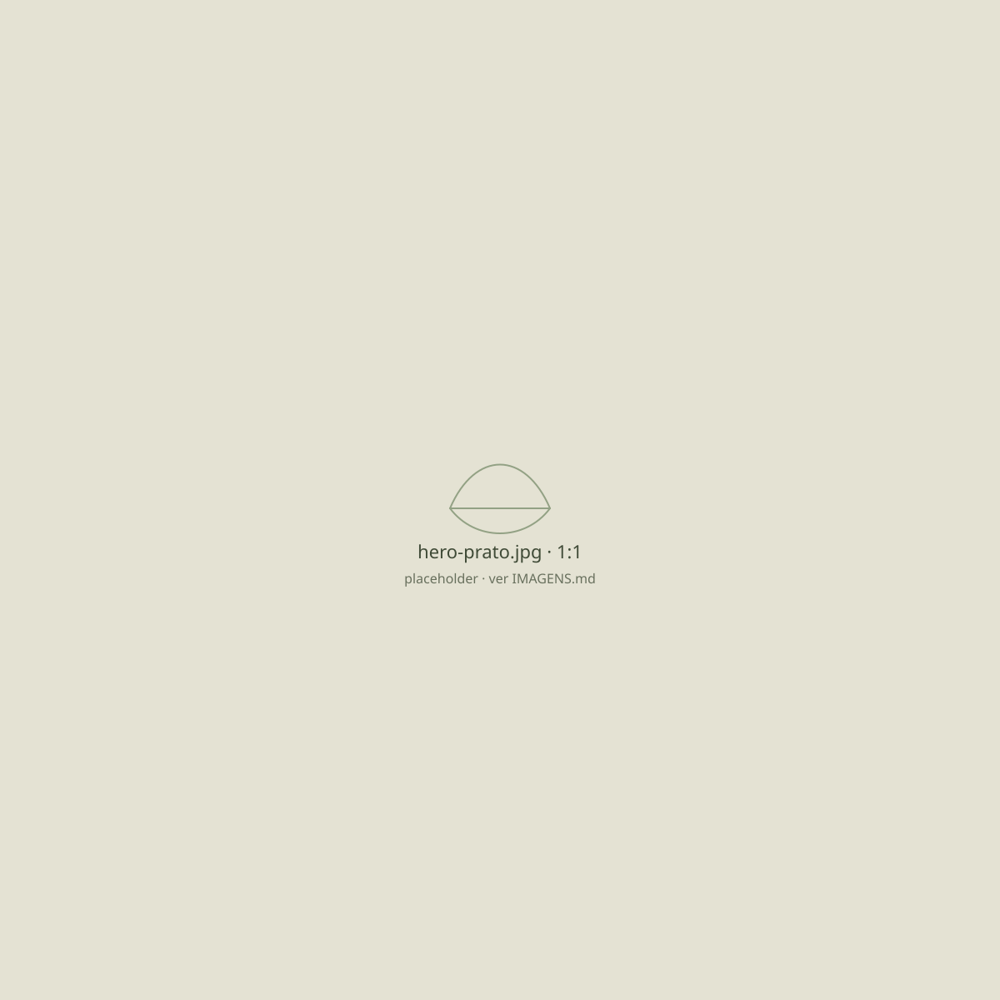
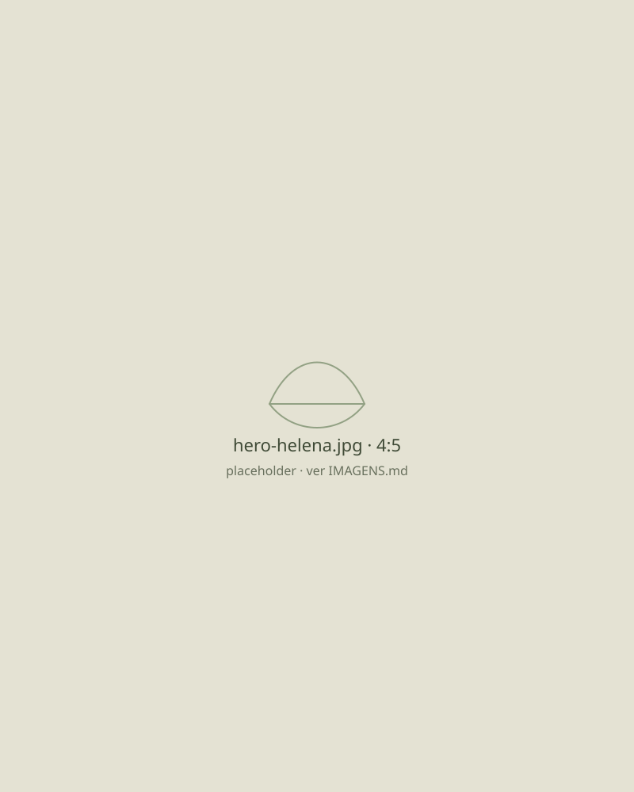
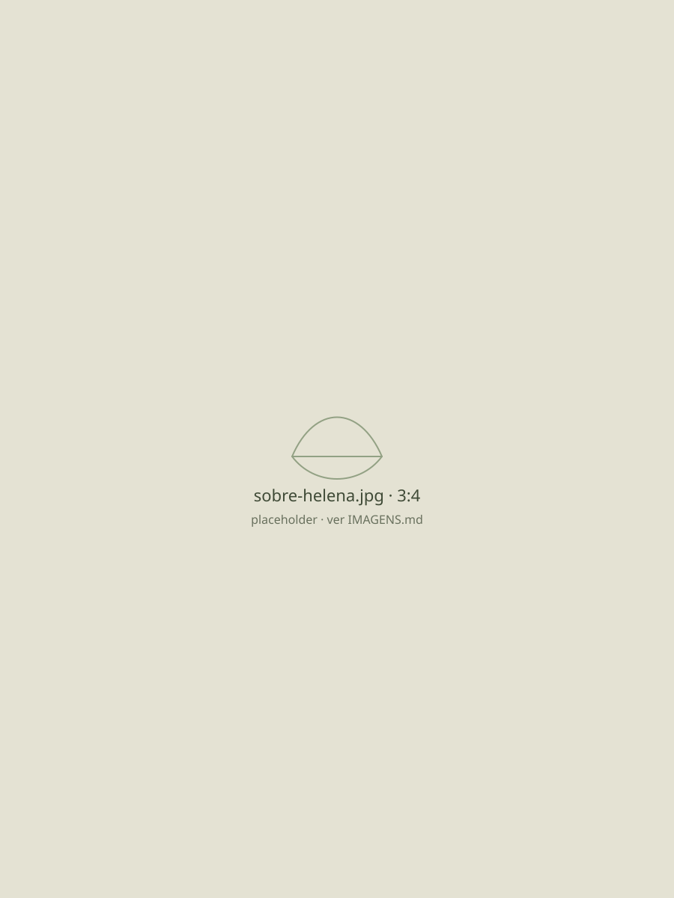

Emagrecimento saudável
Mudanças que cabem na sua semana, sem tirar grupos inteiros de alimentos do prato.
Nutrição clínica para quem quer cuidar da saúde sem cortar tudo o que gosta. Um plano feito com a sua rotina, a sua cultura e a comida que já está no seu prato.
Agendar pelo WhatsApp

Presencial em Macapá e online
Quase ninguém chega à primeira consulta do zero. Chega cansado de tentar. Estas são frases que eu escuto toda semana.
Se você se reconheceu em alguma delas, é por aí que a gente começa. Sem julgamento e sem lista de proibidos.
Quatro cuidados com o mesmo jeito de atender: sem dieta da moda e sem cortar tudo.
Mudanças que cabem na sua semana, sem tirar grupos inteiros de alimentos do prato.
Entender o que incomoda e ajustar a alimentação com calma, método e acompanhamento.
Orientação clara da gestação ao pós-parto, para você comer com tranquilidade nessa fase.
Alimentação pensada para o seu treino, do primeiro mês de academia à rotina de prova.
Três tempos, como uma boa refeição: sem pressa entre um e outro.
Você chama no WhatsApp, escolhe entre presencial ou online e reserva o horário que funciona para você.
Uma conversa de cerca de uma hora sobre a sua rotina, a sua história com a comida, exames que você já tenha e o que você quer cuidar.
Você sai com um plano alimentar possível. Nos retornos, a gente ajusta o caminho conforme a sua vida acontece.

Sou nutricionista clínica e atendo em Macapá desde 2016. Cresci numa casa em que a mesa era o centro do dia, com peixe, açaí, farinha e muita conversa. É daí que vem o meu jeito de trabalhar: comida de verdade, da nossa região, sem transformar o prato em castigo.
Olho para o que você come e também para como, quando e por quê. O plano nasce da sua rotina real, respeita o que você gosta e muda junto com você.
Registro profissional CRN-7 00000
Foi a primeira vez que uma nutricionista perguntou do que eu gostava antes de me dizer o que cortar. Saí da consulta com um plano que eu consigo seguir na minha semana.
Faço o acompanhamento online e nunca me senti atendida pela metade. A Helena tira as dúvidas com calma e explica o porquê de cada mudança.
Na gravidez eu estava perdida com tanta informação. As consultas me deram tranquilidade e eu passei a entender o que estava comendo.
Não encontrou a sua? Pergunte pelo WhatsApp, sem compromisso.
O atendimento é particular. Você recebe recibo com o número do CRN para pedir reembolso ao seu plano, se ele oferecer essa opção.
Os retornos costumam acontecer a cada 30 a 45 dias. Neles a gente revisa o que deu certo, o que ficou difícil e ajusta o plano à sua rotina. O intervalo é combinado com você.
Sim. A conversa acontece por videochamada, com o mesmo tempo e o mesmo cuidado. Você recebe o plano alimentar em PDF e pode atender de qualquer cidade.
Você recebe um plano com opções e combinações, pensado para a sua rotina e para o que você gosta de comer. A ideia é ter liberdade para escolher, não uma lista rígida.
A primeira consulta dura cerca de uma hora. Os retornos levam em torno de 40 minutos.
Agende a sua primeira consulta pelo WhatsApp. Presencial em Macapá ou online, de onde você estiver.
Agendar pelo WhatsAppSite demonstrativo criado por Hugo Gorine Design — quero um site assim